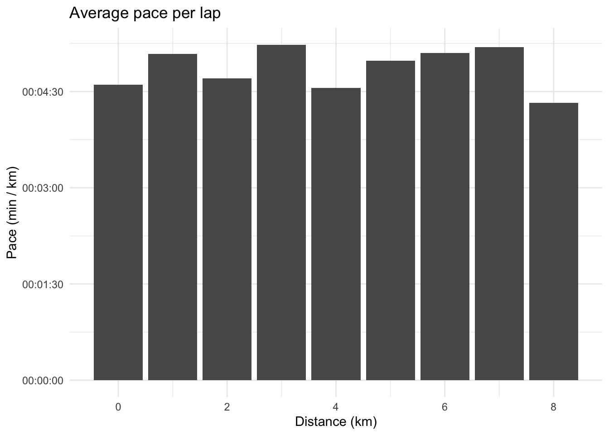
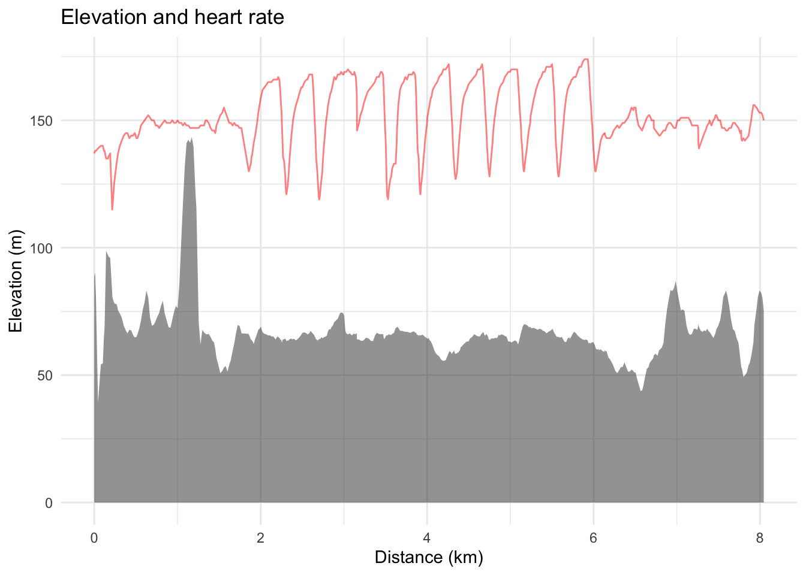

Warning: package 'tidyr' was built under R version 4.1.2
library(dplyr)
Warning: package 'dplyr' was built under R version 4.1.2
Attaching package: 'dplyr'
The following objects are masked from 'package:stats':
filter, lag
The following objects are masked from 'package:base':
intersect, setdiff, setequal, union
library(readr)
Warning: package 'readr' was built under R version 4.1.2
library(ggplot2)library(reticulate)
Warning: package 'reticulate' was built under R version 4.1.2
library(leaflet)
Warning: package 'leaflet' was built under R version 4.1.2
theme_set(theme_minimal())
Garmin running watches output a file type called .fit, the developer SDK can be downloaded from the ANT website. There is also Python library named fitparse which has been written to parse .fit files. This blog post will show you how to use reticulate to parse a .fit file.
First create a Python virtual environment, this is commonly used to store a projects’ package collection together to enable more straightforward reproducibility. A virtual environment also contains its own Python and the python package manager pip for installing and managing packages. reticulate has a function to create a virtual environment:
virtualenv_create("r-reticulate")
virtualenv: r-reticulate
use_virtualenv("r-reticulate")
Parsing
The virtual environment can be used to install the Python package fitparse
py_install("fitparse")
The library can be imported as an R object.
fitparse <- reticulate::import("fitparse")
Then methods and classes defined in the fitparse Python libary can be accessed using the $ notation. Typing $ after fitparse (and hitting the TAB key) in the RStudio IDE gives a list of top-level methods and classes defined in the fitparse library.
This evaluates the generator and applies the function get_values to retrieve the details associated with this activity. A list object is returned by R, the first element looks like this:
We want to transform this list of lists into a dataframe. The most straightforward way is to extract the elements of interest using the map function from purrr:
Notice that the latitude and longitude don’t look correct, it turns out they are in semicircles and can be converted to a recognisable coordinate system using the following function.
We can recreate plots commonly found on activity websites such as training peaks, Strava and Garmin Connect, for instance average speed for each 1km:
activity_tibble %>%mutate(lap = distance %/%1) %>%group_by(lap) %>%summarise(lap_distance =sum(dist_to_prev), lap_time =sum(time_diff_to_prev), pace = hms::as_hms(lap_time / lap_distance)) %>%ggplot(aes(x = lap, y = pace)) +geom_col() +xlab("Distance (km)") +ylab("Pace (min / km)") +labs(title ="Average pace per lap")

activity_tibble %>%mutate(distance =cumsum(dist_to_prev)) %>%ggplot(aes(x = distance, y = elevation)) +geom_area(alpha =0.5) +geom_line(aes(x = distance, y = heart_rate), colour ="#ff0000", alpha =0.5) +xlab("Distance (km)") +ylab("Elevation (m)") +labs(title ="Elevation and heart rate")

Analysing heart rate data
We can determine how hard the activity was for the athlete using heart rate data. Heart rate is an individual metric and differs between athletes running the same pace. To that end, we must compute the heart rate relative to the maximum heart rate or using heart rate reserve (taking into account both the maximum and resting heart rate). Using the max heart rate and resting heart rate, training zones can be determined. These zones are broad and for the convenience of the athlete (and coach) when performing workouts at a given intensity. This intensity should vary depending on the purpose of the workout (recovery, threshold, VO2 max intervals etc.).
Suggested heart rate zones according to Pete Pfitzinger are:
Active recovery: less than 76% MHR
General Aerobic: 70%-81% MHR
Tempo (Marathon pace): 81%-88% MHR
Lactate Threshold: 82%-92% MHR
Anaerobic: 95%+
For my maximum heart rate of 189, the zones can be written as.
zones <-c("one"=0.76*189,"two"=0.81*189,"three"=0.88*189,"four"=0.92*189,"five"=189)
knitr::kable(tibble::rownames_to_column(data.frame(heart_rate =round(zones, 0)), var ="zone"))
zone
heart_rate
one
144
two
153
three
166
four
174
five
189
Then the time in zones can be plotted for the given activity.
TRIMP can be used (TRaining IMPulse) to calculate a one-number summary of the activity difficulty, more information on TRIMP can be found here.
The most straightforward way to calculate TRIMP is calculating the total time in each zone by multiplying the zone number by the total minutes in the corresponding zone.
This number is straightforward to calculate however it lacks nuance. For instance it remains the same if the athlete is at either the upper or lower end of the heart rate range for a given zone. To account for this TRIMP exp can be calculated:
Where, \(\textrm{D}_i\) is the duration of a single measurement (typically one to five seconds on a Garmin watch), HRr is the heart rate reserve (maximum heart rate - resting heart rate), \(y\) is the percentage of heart rate reserve multiplied by 1.92 for men and 1.67 for women.
These summaries can be used to calculate the overall training workload for an athlete to assist with planning and reviewing training plans. This is typically used in addition to training time and distance covered.
Citation
BibTeX citation:
@online{law2019,
author = {Law, Jonny},
title = {Analysing .fit Files in {R}},
date = {2019-11-04},
langid = {en}
}
For attribution, please cite this work as:
Law, Jonny. 2019. “Analysing .fit Files in R.” November 4,
2019.